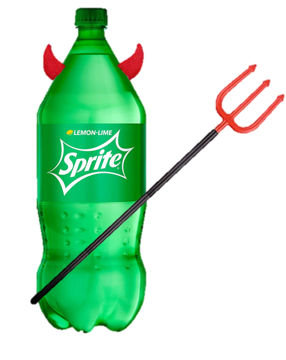
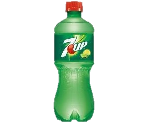

The debate of the century: Which is better, Coca Cola, or Pepsi? Just kidding, that's been done to death.
This website looks at the differences in 7up and Sprite, and aims to explain how 7up is clearly superior to Sprite!
 
Yes, the focus of this website is to show the statistics comparing things like sodium, flavor, calorie content, date of arrival, flavors & variety, corruption in the product monufacturers, quality of product, ad campaigns; the usual suspects. The combination of this data should prove that 7up is amazing and Sprite is just evil sugar-water made by Satan designed to slowly kill you and your dog.
This Website is made specifically for satire, the opinions expressed in this website may or may not be expressed by the actual owner of this website, all facts and figures are real and true to the best of my fact-finding abilities and the truthfulness of the websites who've published them, take all information shown with a grain of salt even though most information will be linked, if you want to learn more, this debate is a very popular topic for social media, I'm sure you can find someone else to pick a fight with, finally I spent a lot of time on this website, please don't hate, just enjoy.
And just so you know, this website will be mostly 7up-themed because 7up is my gospel, as it should be yours, praised be 7up!
7up is a force for good
Sprite is an evil virus of Satan
| Link to the information | Link to the opinions and conclusions | Link to the links and evidence |
|---|---|---|
| Jill | Smith | 50 |